Unofficial study solution; not an official GTU answer key. Answers have not been independently verified. English text reflows; source equations, diagrams and Gujarati retain their original appearance. Use Enlarge image to inspect them.
આ બિનસત્તાવાર અભ્યાસ ઉકેલ છે, સત્તાવાર GTU જવાબવહી નથી. PDF માંથી ગુજરાતી લખાણ સાચું નીકળતું નથી, તેથી દરેક જવાબ મૂળ ચિત્રરૂપે જાળવ્યો છે. વાંચવા માટે ચિત્ર મોટું કરો. મૂળ પ્રશ્ન અને પરીક્ષાના વિકલ્પોની સૂચનાઓ અનુસરો.
Coverage: all five questions and every printed OR alternative are answered: 28 parts. The authentic English question is retained in both language views; answers are in English and Gujarati.
Printed instructions: attempt all questions; make suitable assumptions; figures on the right indicate full marks; simple and non-programmable scientific calculators are permitted; the English version is authentic.
Important data caveats: Q3(c) prints an SO₂ heat-capacity expression without T in its middle term and without Cp units; its literal and conditional interpretations are distinguished. Q3 OR(c) prints a nitrogen flow in kJ/kmol, not a flow-rate unit, so no unique heat rate is claimed. Q4(c) does not explicitly ask for a quantity; the inferred reaction heat is identified. Assumptions are stated in each answer.
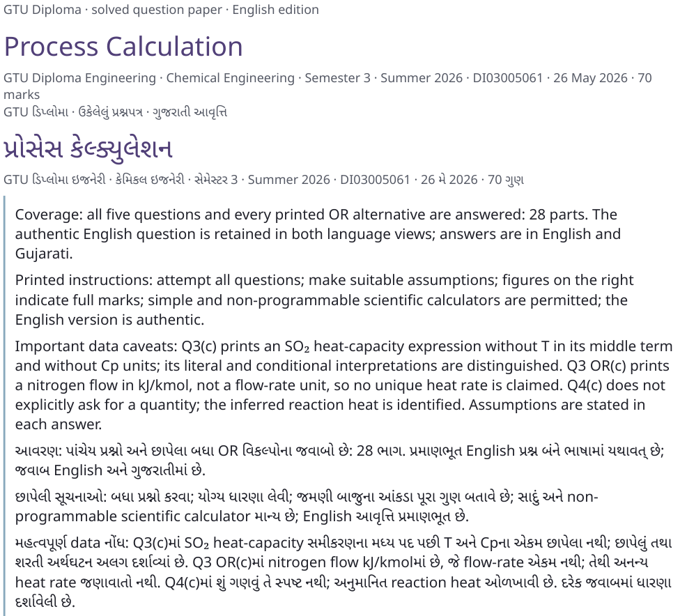
Question 1
Q1 · Evaporation, oil recovery and mixing
Q.1 (a) · A single effect evaporator is fed with 10000 kg/h of weak liquor containing 15% caustic by weight and is concentrated to get thick liquor containing 40% by weight caustic. Calculate (1) kg/h water evaporated (2) kg/h thick liquor obtained. · 3 marks
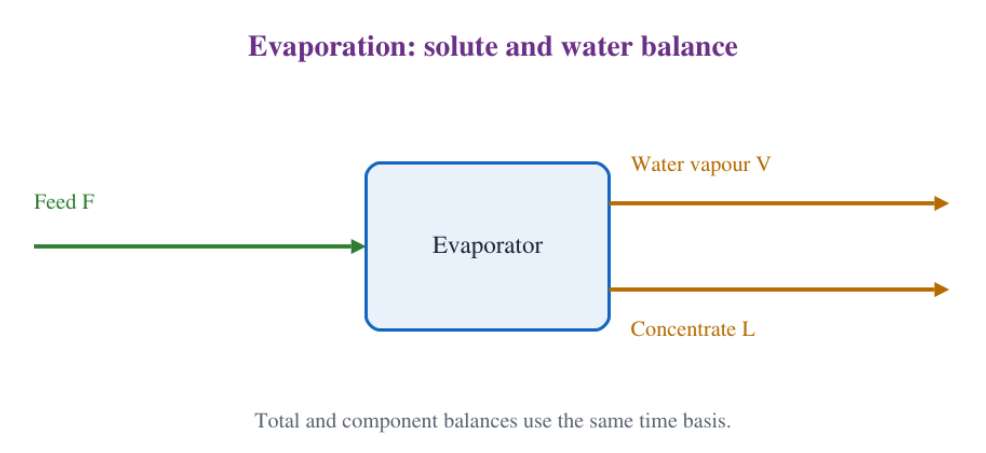
Caustic stays in the liquid; vapour is water.
Given, basis and assumptions
Basis: 10,000 kg/h feed, 15 wt% NaOH; liquid product contains 40 wt% NaOH.
Assume steady state and only water evaporates; no caustic leaves in vapour.
Step-by-step solution
1. NaOH feed — NaOH = 0.15 × 10,000 = 1,500 kg/h.
3. Total balance — V = F − L = 10,000 − 3,750 = 6,250 kg/h.
Water evaporated = 6,250 kg/h; thick liquor = 3,750 kg/h.
Check: water in product = 2,250 kg/h; 8,500 = 6,250 + 2,250 kg/h.
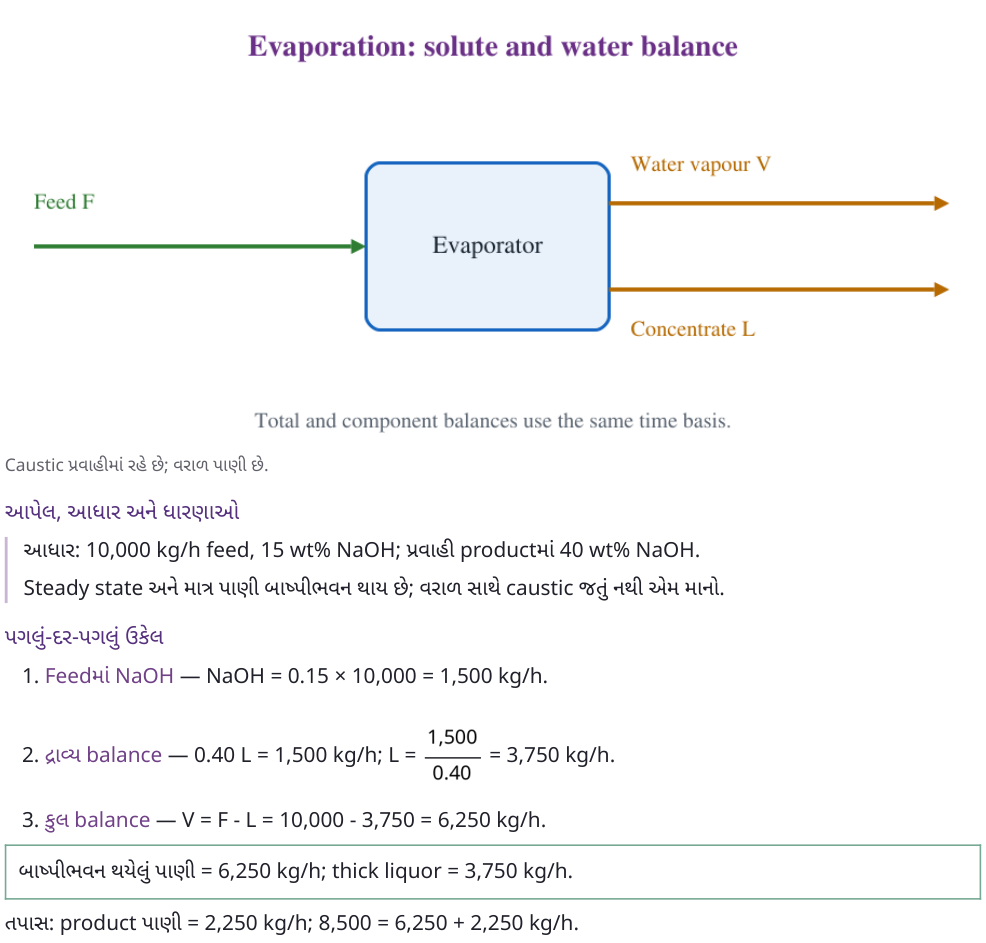
Q.1 (b) · The ground nut seeds containing 45% oil and 45% solids are fed to expeller, the cake coming out of expeller is found to contain 80% solids and 5% oil. Find the percentage recovery oil. · 4 marks
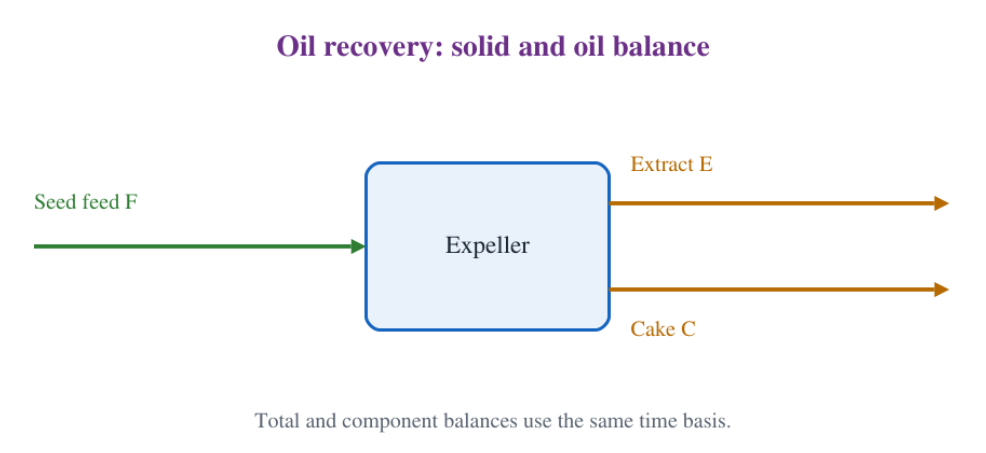
The extract can contain the unspecified non-oil component.
Given, basis and assumptions
Basis: 100 kg seeds contain 45 kg oil and 45 kg non-oil solids; the other 10 kg is unspecified.
Assume all solids leave with cake, all oil outside cake is recovered, and no other oil loss occurs.
Step-by-step solution
1. Solid balance — 0.80 C = 45 kg; C = 56.25 kg cake.
2. Oil in cake — Oil retained = 0.05 × 56.25 = 2.8125 kg.
3. Recovered oil — Recovered oil = 45 − 2.8125 = 42.1875 kg.
Oil recovery = 93.75% of oil in the feed (under the stated assumptions).
The feed percentages sum to 90%, and cake fractions to 85%; their remaining constituents are unspecified. For two outlets, the extract need not be pure oil: cake contains 8.4375 kg other material and 1.5625 kg of the original other material leaves with extract. Unreported losses would change the recovery.
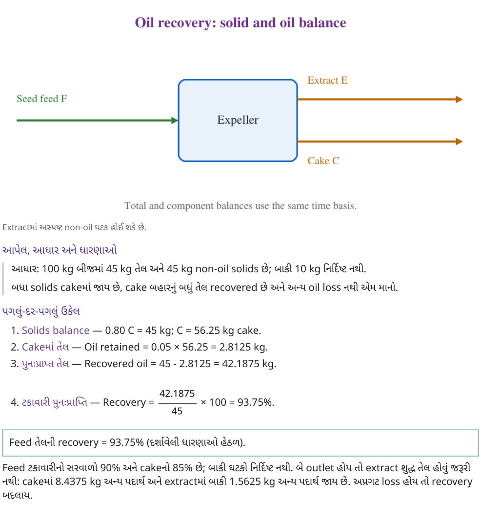
Q.1 (c) · The waste acid from nitrating process containing 20% HNO3, 55% H2SO4 and 25% H2O by weight is to be concentrated by addition of concentrated sulphuric acid containing 95% H2SO4 and concentrated nitric acid containing 90% HNO3 to get desired mixed acid containing 26% HNO3 and 60% H2SO4. Calculate the quantities of waste and concentrated acids required for 1000 kg of desired mixed acid. · 7 marks
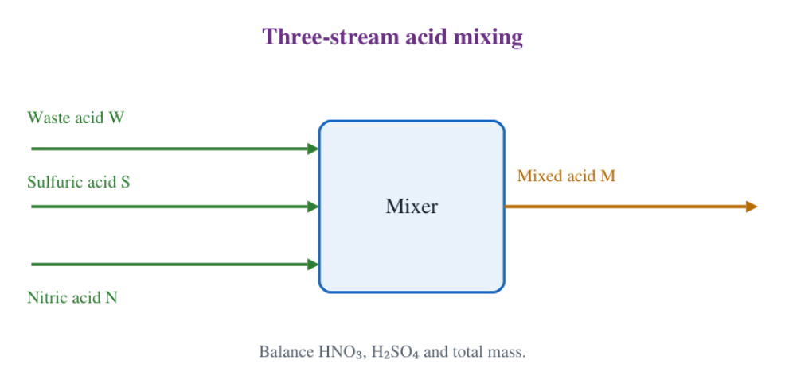
Three input streams mix to give 1,000 kg product.
Given, basis and assumptions
Basis: 1,000 kg desired acid; W = waste acid, S = 95 wt% H₂SO₄ solution, N = 90 wt% HNO₃ solution.
Assume each added acid contains only the stated acid and water, with no cross-acid impurity, loss or reaction; desired remainder is water.
Step-by-step solution
1. Total balance — W + S + N = 1,000 kg.
2. Nitric acid balance — 0.20W + 0.90N = 260 kg.
3. Sulfuric acid balance — 0.55W + 0.95S = 600 kg.
6. Quantities — W = 400 kg; S = 400 kg; N = 200 kg.
Waste acid = 400 kg; 95% H₂SO₄ = 400 kg; 90% HNO₃ = 200 kg.
Check: HNO₃ = 80 + 180 = 260 kg; H₂SO₄ = 220 + 380 = 600 kg; water = 100 + 20 + 20 = 140 kg. Different unspecified acid impurities would alter the solution.
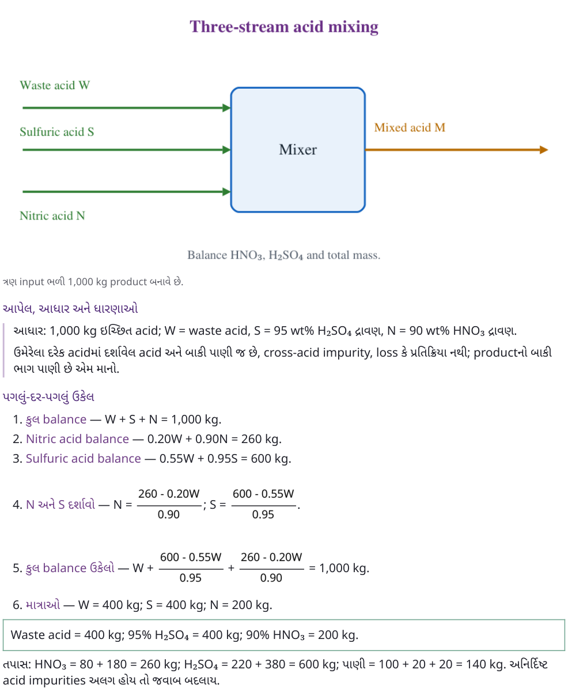
Q.1 (c) · A feed to a continuous fractioning column analyses by weight 28 percent benzene and 72 percent toluene. The analysis of the distillate shows 52 weight percent benzene and 5 weight percent benzene was found in the bottom product. Calculate the amount of distillate and bottom product per 1000 kg of feed per hour. Also calculate the percent recovery of benzene. · OR · 7 marks
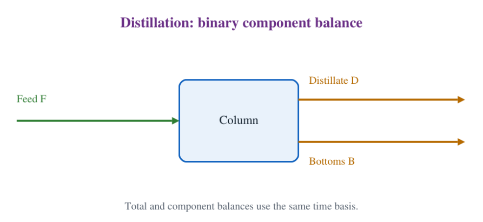
The given percentages in this question are mass fractions.
Given, basis and assumptions
Basis: 1,000 kg/h feed with 28 wt% benzene; distillate is 52 wt% and bottoms 5 wt% benzene.
Assume steady state, binary streams and no losses.
Step-by-step solution
1. Total balance — D + B = 1,000 kg/h.
2. Benzene balance — 0.52D + 0.05B = 0.28(1,000) = 280 kg/h.
3. Solve — 0.52D + 0.05(1,000 − D) = 280; 0.47D = 230.
4. Product rates — D = 489.3617 kg/h; B = 510.6383 kg/h.
Distillate ≈ 489.36 kg/h; bottoms ≈ 510.64 kg/h; benzene recovery in distillate ≈ 90.88%.
The unrecovered benzene in bottoms is 0.05(510.6383) = 25.5319 kg/h; total benzene closes at 280 kg/h.
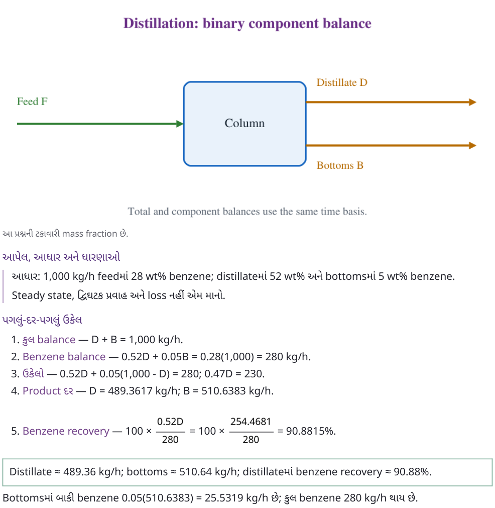
Question 2
Q2 · Reaction terminology, drying and stoichiometry
Q.2 (a) · Define: Conversion, Yield and Selectivity · 3 marks
Feed-based yield is desired product obtained divided by the theoretical desired product from the
Selectivity compares desired product formed with an undesired product formed, using a stated
Example: 100 mol A fed, 75 mol A reacts and 60 mol C forms, with 1 mol C theoretically per mol A:

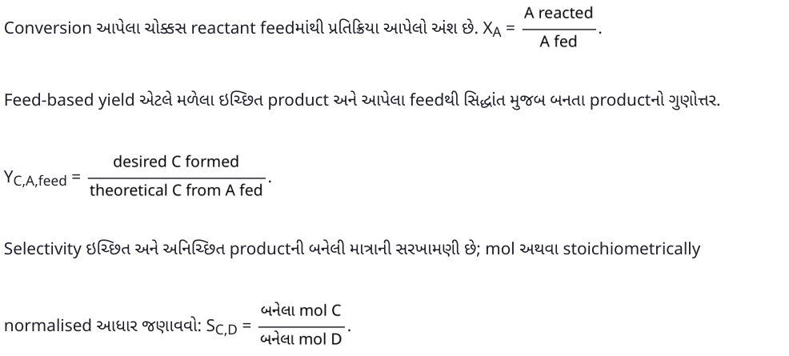
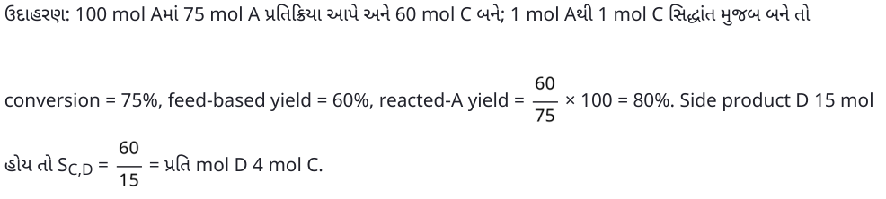
Q.2 (b) · 2000 kg of wet solids containing 70% solids by weight are fed to a tray dryer where it is dried dried by hot air. The product finally obtained is found to contain 1% moisture by weight, calculate (a) the kg of water removed from wet solids (b) the kg of product obtained. · 4 marks
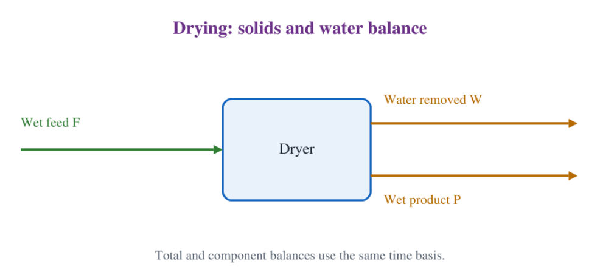
The 1% moisture is on a wet-product basis.
Given, basis and assumptions
Basis: 2,000 kg wet solids, containing 70 wt% dry solids. Product has 1 wt% moisture.
Assume no solid loss and water is the only component removed.
Step-by-step solution
1. Initial solids and water — Dry solids = 0.70(2,000) = 1,400 kg; initial water = 600 kg.
2. Solids balance — Product has 99% solids: 0.99P = 1,400; P = 1,414.1414 kg.
3. Removed water — W = 2,000 − 1,414.1414 = 585.8586 kg.
Water removed ≈ 585.86 kg; product ≈ 1,414.14 kg.
Check: final water = 0.01P = 14.1414 kg; 600 − 14.1414 = 585.8586 kg.
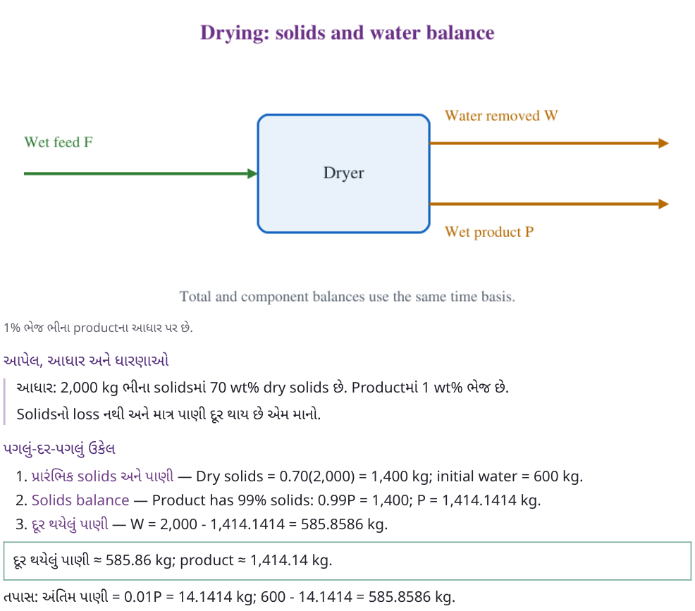
Q.2 (c) · In production of sulphur trioxide, 100 kmol of SO2 and 100 kmol of O2 are fed to a reactor. If the percent conversion of SO2 is 80, calculate the composition of the product stream on mole basis. · 7 marks
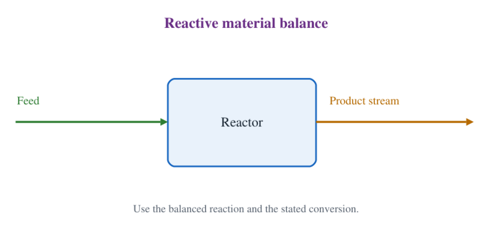
One mole O₂ reacts for every two moles SO₂.
Given, basis and assumptions
Basis: 100 kmol SO₂ and 100 kmol O₂ fed; 80% of SO₂ reacts.
Assume the only reaction is 2SO₂ + O₂ → 2SO₃ and no feed SO₃ or other gases.
Step-by-step solution
1. SO₂ reacted — SO₂ reacted = 0.80(100) = 80 kmol; SO₂ left = 20 kmol.
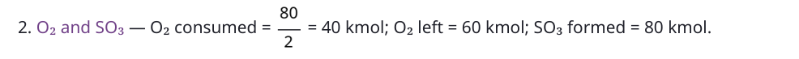
3. Total product — Total = 20 + 60 + 80 = 160 kmol.
50.00%.
Product composition: SO₂ 12.50 mol%, O₂ 37.50 mol%, SO₃ 50.00 mol%.
Component and atom balance check: sulfur 100 kmol atoms and oxygen 400 kmol atoms on each side.
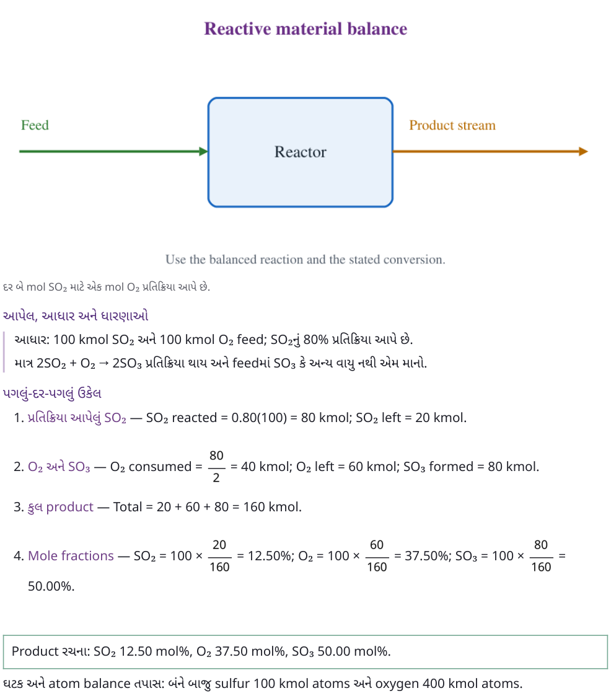
Q.2 (a) · Define: Limiting Reactant, Excess Reactant and Stoichiometry · OR · 3 marks
Limiting reactant: the reactant with the least available stoichiometric extent; it fixes the maximum reaction extent.
Excess reactant: a reactant supplied above the amount required for complete reaction with the limiting feed.
Stoichiometry: the quantitative mole relationships among reactants and products given by a balanced chemical equation.
For A + 2B → C with 1 mol A and 3 mol B, A is limiting, B is 50% excess, and the mole coefficients are 1:2:1.
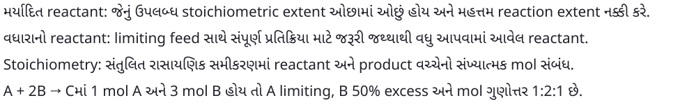
Q.2 (b) · It is desired to make up 1000 kg of a solution containing 35% by weight of a substance ‘A’. Two solutions are available, one containing 10 weight percent ‘A’ and other containing 50 weight percent ‘A’. How many kilograms of each solution will be required? · OR · 4 marks
Given, basis and assumptions
Basis: 1,000 kg final solution with 35 wt% A; L has 10 wt% A and H has 50 wt% A.
Assume no evaporation, reaction or loss.
Step-by-step solution
1. Total balance — L + H = 1,000 kg.
2. A balance — 0.10L + 0.50H = 0.35(1,000) = 350 kg.
3. Solve — 0.10(1,000 − H) + 0.50H = 350; H = 625 kg; L = 375 kg.
10% solution = 375 kg; 50% solution = 625 kg.
Check: 0.10(375) + 0.50(625) = 350 kg A.
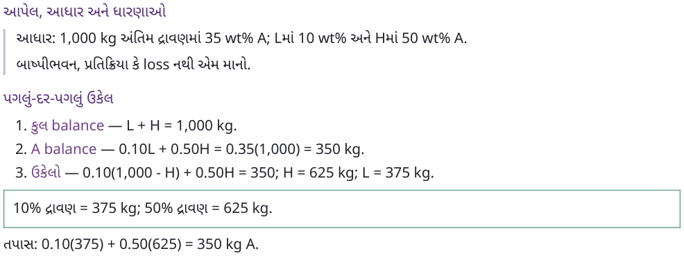
Q.2 (c) · Ammonia is produced by the following reaction: N2 + 3 H2 → 2 NH3 Calculate: (a) the molal flow rate of hydrogen corresponding to nitrogen feed rate of 25 kmol/h if they are fed in the stoichiometric proportion. (b) The kg of ammonia produced per hour if percent conversion is 25 and nitrogen feed rate is 25 kmol/h. · OR · 7 marks

Use the balanced 1:3:2 molar stoichiometry.
Given, basis and assumptions
Basis: nitrogen feed = 25 kmol/h; N₂ + 3H₂ → 2NH₃.
Feed is stoichiometric; 25% conversion refers to nitrogen. Assume this is the sole reaction and use MNH₃ = 17 kg/kmol.
Step-by-step solution
1. Stoichiometric H₂ feed — H₂ feed = 3 × 25 = 75 kmol/h.
2. N₂ reacted — N₂ reacted = 0.25 × 25 = 6.25 kmol/h.
3. NH₃ formed — NH₃ = 2 × 6.25 = 12.5 kmol/h.
4. Convert to mass — NH₃ mass = 12.5 × 17 = 212.5 kg/h.
H₂ feed = 75 kmol/h; ammonia produced = 212.5 kg/h.
Outlet check: unreacted N₂ = 18.75 kmol/h and H₂ = 56.25 kmol/h; conversion is per pass if the feed is a reactor feed.
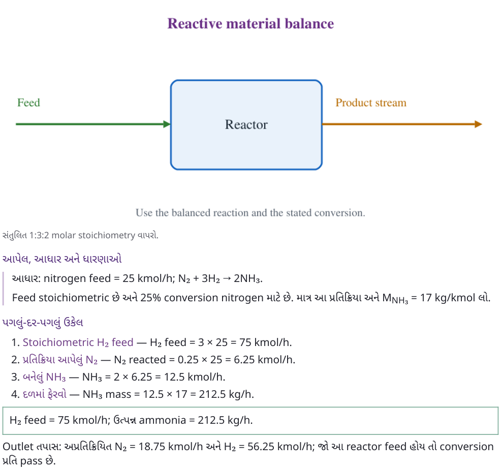
Question 3
Q3 · Material balance, recycle and sensible heat
Q.3 (a) · Explain Importance of material balance in chemical industries. · 3 marks
A material balance applies conservation of mass to a specified system and time interval.
Accumulation = input − output + generation − consumption
• It calculates unknown feed, product and waste streams and checks operating data.
• It supports equipment sizing, raw-material procurement, yield improvement and process control.
• It identifies material loss and helps plan waste treatment and environmental compliance.
At steady state accumulation is zero; for a non-reacting component, generation and consumption are also zero. Example: water removed in a dryer.
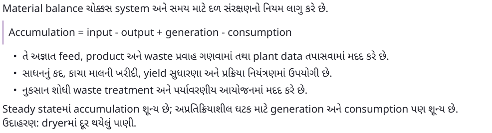
Q.3 (b) · Explain Recycle Operation with block diagram. · 4 marks
Recycle returns part of a process outlet to an earlier point, normally mixing it with fresh feed. Separation can recover unreacted material before it returns to the reactor.
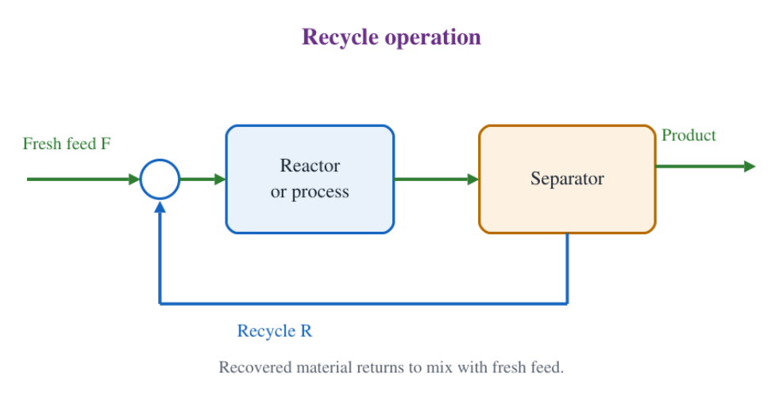
Schematic recycle loop; F is fresh feed and R is the recycle stream.
1. Fresh feed and recycle mix before the process unit.
2. A separator removes product and returns suitable unreacted material.
3. The recycle can improve overall raw-material utilisation; inert build-up may require a purge.
Example: recover unreacted ammonia-synthesis gases and return them to the reactor.
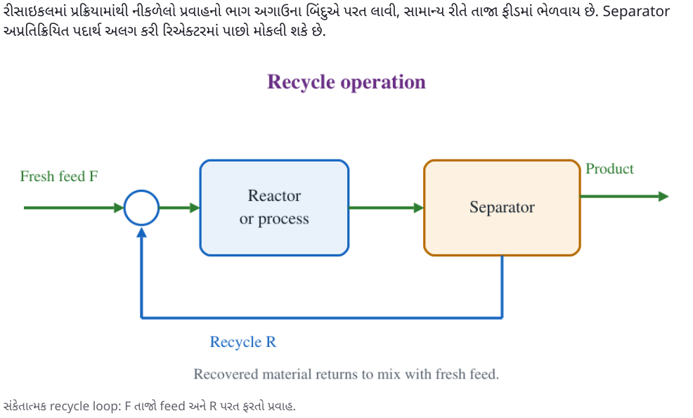
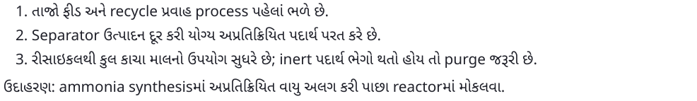
Q.3 (c) · Heat capacity data for SO2: Cp⁰= 43.458 + 10.634 x 10⁻³ - 5.945 x 10⁵ / T² Calculate the heat needed to raise the temperature of 1 kmol pure sulphur dioxide from 300 K to 1000 K. · 7 marks
Given, basis and assumptions
Basis: 1 kmol pure SO₂ heated from 300 K to 1,000 K.
For a literal calculation, assume the numerical correlation is in kJ kmol⁻¹ K⁻¹ with T in K; heat equals ΔH for a steady heater with negligible kinetic/potential energy changes and no shaft work, or a constant-pressure closed process with only boundary work.
Step-by-step solution
3. Evaluate — Δh = 30,428.0438 − 1,387.1667 = 29,040.8771 kJ/kmol.
4. For 1 kmol — Q = 1 kmol × 29,040.8771 kJ/kmol = 29,040.88 kJ.
Literal printed formula, with assumed Cp units: Q ≈ 29,040.88 kJ.
If the intended term was 10.634 × 10⁻³ T (a plausible but unconfirmed missing T), the added
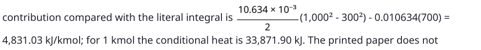
establish that correction or Cp units; verify before treating either number as definitive.
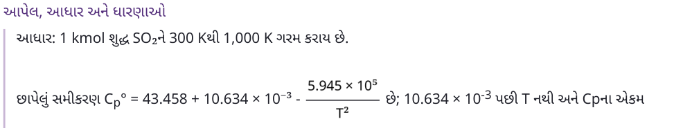
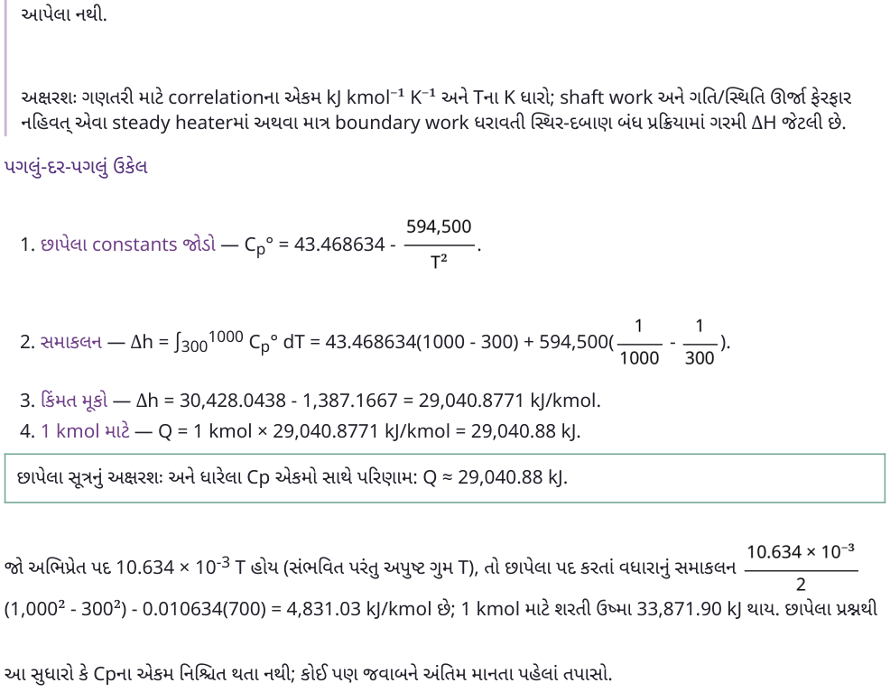
Q.3 (a) · Explain Percent Excess reactant. · OR · 3 marks
An excess reactant is fed in more than the stoichiometric amount needed to react completely with the chosen limiting-reactant feed.

The denominator is the stoichiometric requirement for the feed, not the amount actually consumed at incomplete conversion.
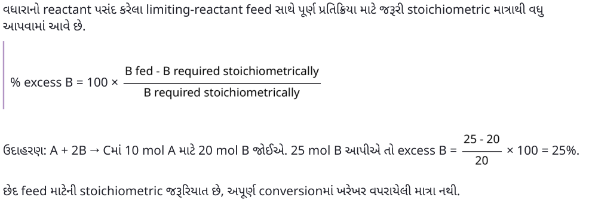
Q.3 (b) · Explain Bypass Operation with block diagram. · OR · 4 marks
In bypass, a portion of fresh feed avoids a process unit and is mixed with the treated stream downstream.
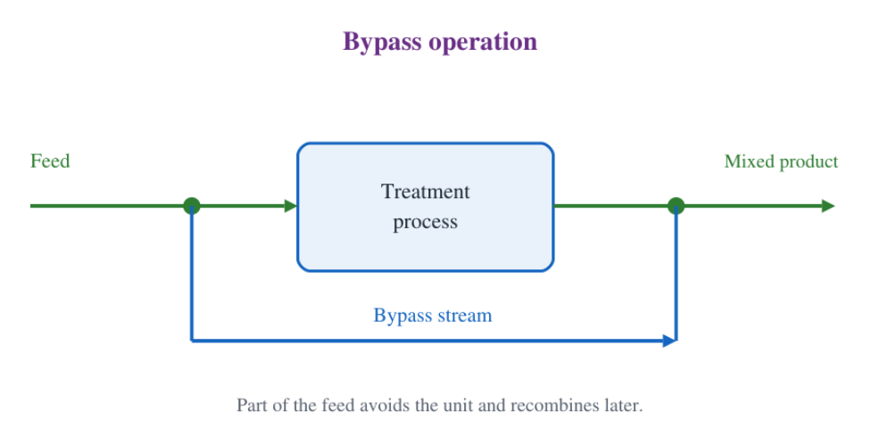
The bypass joins the treated stream; it is not a recycle.
1. Split the feed into treated and bypass streams.
2. Treat one part, then mix it with the untreated part.
3. Use total and component balances across both the unit and mixer.
Example: bypass part of wet feed around a dryer to control the final moisture.

Q.3 (c) · A stream of nitrogen flowing at a rate of 100 kJ/kmol is heated from 303 K to 373 K. Calculate the heat that must be transferred. Cp⁰ for nitrogen = 29.5909 - 5.141 x 10⁻³ T+ 11.1829 x 10⁻⁶ T²- 4.968 x 10⁻⁹ T³ · OR · 7 marks
Given, basis and assumptions
Basis: 1 kmol N₂, heated from 303 K to 373 K.
The printed flow is “100 kJ/kmol”, an energy-per-amount unit, not a molar flow rate. No unique total heat rate can be calculated from it.
Assume the stated Cp correlation has units kJ kmol⁻¹ K⁻¹, T is in K and a steady heater has negligible kinetic/potential changes and no shaft work.
Step-by-step solution
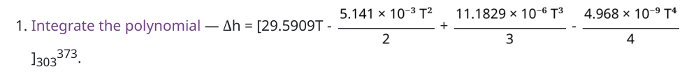
2. Evaluate contributions — Δh = 2,071.3630 − 121.6361 + 89.7502 − 13.5726 = 2,025.9046 kJ/kmol.
3. Heat for amount n — Q = n × 2,025.9046 kJ/kmol; heat rate = molar flow rate × 2,025.9046 kJ/ kmol.
Specific enthalpy rise ≈ 2,025.90 kJ/kmol; the printed data do not determine a unique heat rate.
Only if the intended flow were 100 kmol/h (not what is printed), Q̇ ≈ 202,590 kJ/h. If instead 100 kmol were an amount, Q ≈ 202,590 kJ. These are conditional illustrations, not corrections established by the paper.
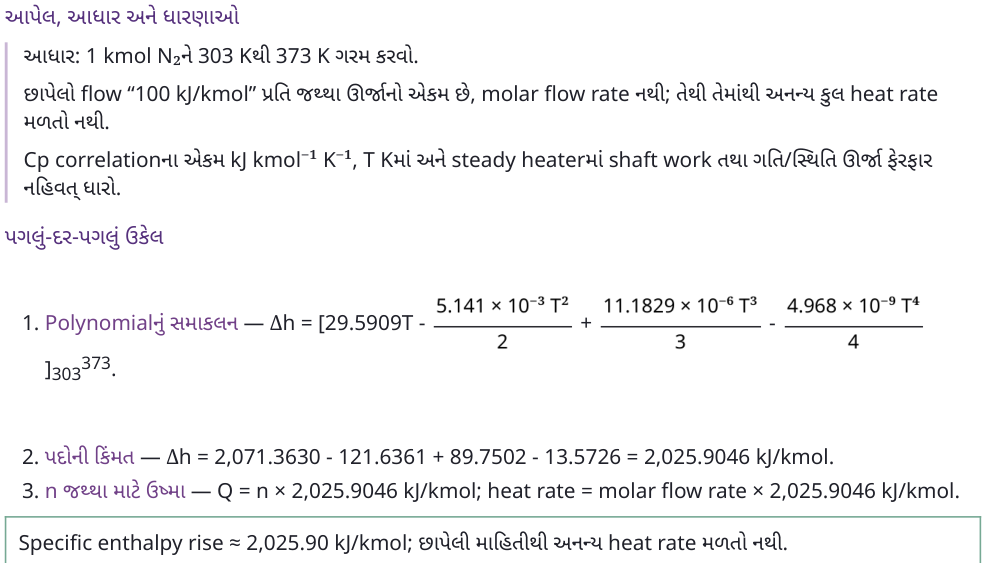
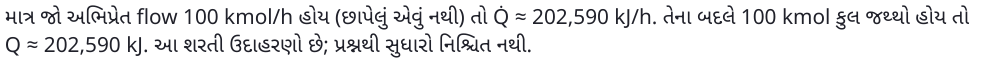
Question 4
Q4 · Heat capacities and heats of reaction
Q.4 (a) · Define Specific heat, Heat capacity and sensible heat. · 3 marks
Heat capacity is the heat required per unit temperature rise for a specified body and process,
is per mole or kmol.
Sensible heat changes temperature without a phase change; for constant c, Q = mcΔT under the appropriate process conditions.
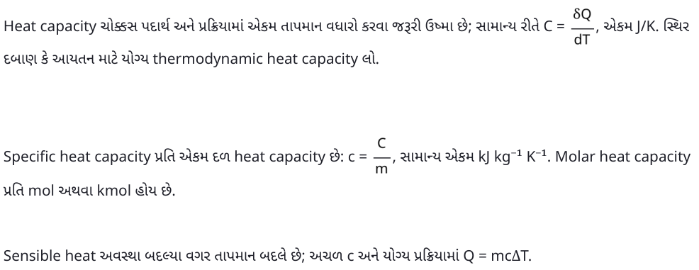
Q.4 (b) · Derive CP - CV = R · 4 marks
For an ideal gas, the molar internal energy u and enthalpy h depend only on temperature. Use a consistent molar basis.
1. By definition h = u + pv. For an ideal gas pv = R̄ T, hence h = u + R̄ T.
2. Differentiate: dh = du + R̄ dT.
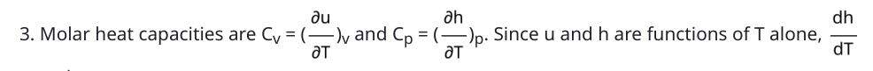
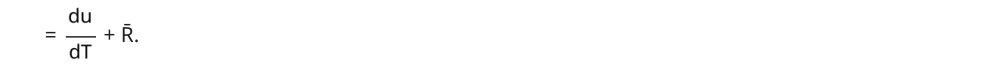
4. Therefore Cp = Cv + R̄ .
Cp − Cv = R̄ (ideal gas, molar basis)
The heat capacities and R̄ must use matching units. On a mass basis use the specific gas constant
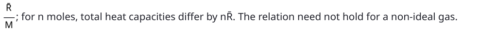
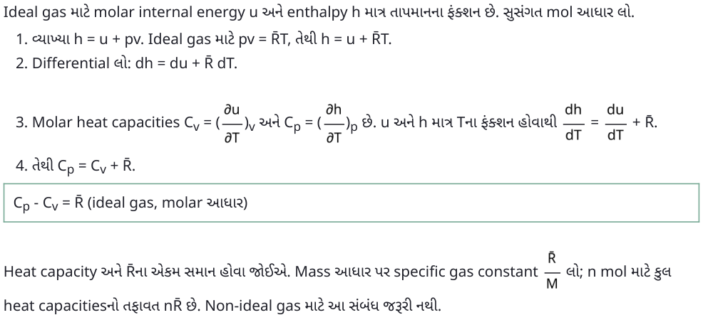
Q.4 (c) · 5 mol of ethylene oxide is produced at 298 K. C2H4 (g) + 1/2 O2 (g) → C2H4O (g) Component ΔHf0, kJ/mol at 298 K C2H4 (g) 52.50 C2H4O (g) - 52.63 · 7 marks
Given, basis and assumptions
Basis: 5 mol C₂H₄O(g) produced at 298 K; C₂H₄(g) + ½O₂(g) → C₂H₄O(g).
Given ΔH°f: C₂H₄(g) +52.50 and C₂H₄O(g) −52.63 kJ/mol; O₂(g) in its standard state is zero.
The printed problem does not explicitly state what to calculate; infer the standard reaction enthalpy and heat for 5 mol.
Step-by-step solution
1. Reaction enthalpy — ΔH°rxn = (−52.63) − [52.50 + ½(0)] = −105.13 kJ/mol reaction.
2. Five moles — n(C₂H₄O) = 5 mol; ΔH = 5(−105.13) = −525.65 kJ.
ΔH° = −105.13 kJ/mol; for 5 mol, ΔH = −525.65 kJ.
At constant pressure, if only pressure–volume work occurs and the stated standard-state conditions apply, 525.65 kJ must be removed to maintain 298 K. Other heat effects or nonstandard states require additional data.
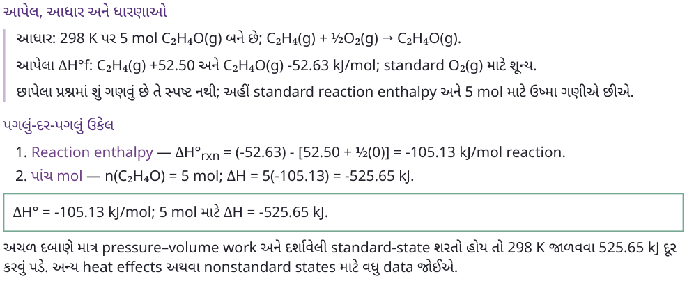
Q.4 (a) · Define: Latent heat of vaporization, latent heat of fusion, latent heat of sublimation. · OR · 3 marks
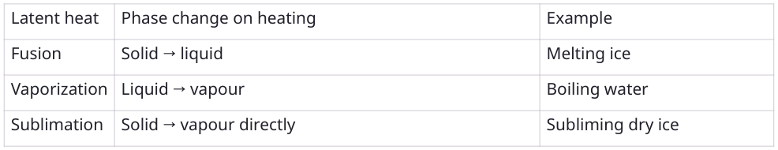
Latent heat is energy per unit mass or mole for a phase change at the specified pressure and phase-equilibrium temperature. At fixed pressure, Q = mL for a complete change; the reverse process releases the corresponding heat.
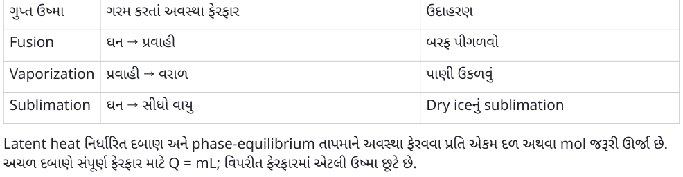
Q.4 (b) · Explain exothermic and endothermic reaction. · OR · 4 marks
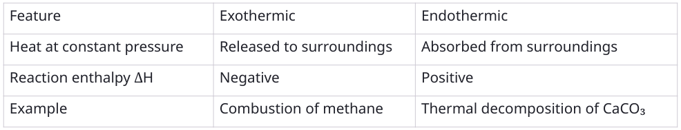
ΔH is products minus reactants at specified temperature and phases. A heat source may be needed to start an exothermic reaction despite its negative overall ΔH.
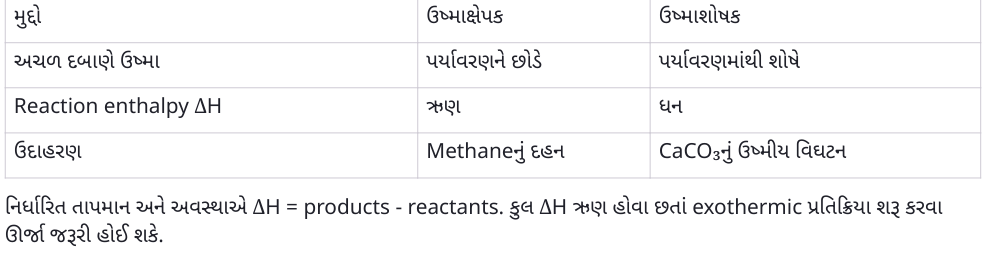
Q.4 (c) · Calculate the standard heat of reaction of the following reaction: C5H12 (l) + 8O2 (g) → 5CO2 (g) + 6 H2O (l) Component Δ Hf0, kJ/mol at 298.15 K C5H12 (l) - 173.49 CO2 (g) - 393.51 H2O (l) - 285.83 · OR · 7 marks
Given, basis and assumptions
Basis: 1 mol liquid C₅H₁₂ at 298.15 K; C₅H₁₂(l) + 8O₂(g) → 5CO₂(g) + 6H₂O(l).
Formation enthalpies in kJ/mol: C₅H₁₂(l) −173.49, CO₂(g) −393.51, H₂O(l) −285.83; O₂(g) = 0.
Step-by-step solution
1. Products — 5(−393.51) + 6(−285.83) = −3,682.53 kJ.
2. Reactants — −173.49 + 8(0) = −173.49 kJ.
3. Reaction enthalpy — ΔH°rxn = −3,682.53 − (−173.49) = −3,509.04 kJ/mol.
ΔH°rxn = −3,509.04 kJ per mol C₅H₁₂ burned.
Both pentane and water phases must match the printed formation-enthalpy data.
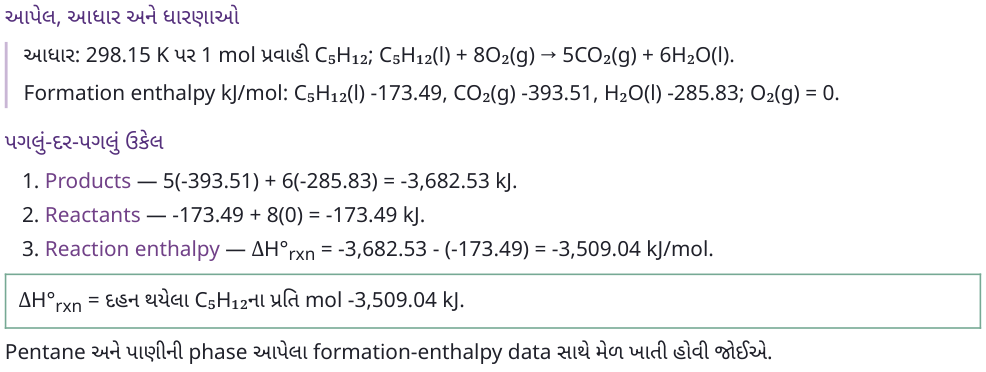
Question 5
Q5 · Fuels, air and calorific values
Q.5 (a) · Explain types of fuels. · 3 marks
Fuels are commonly classified by physical state:
• Solid: coal, coke, wood or biomass; normally handled as lumps or powder.
• Liquid: diesel, fuel oil or kerosene; pumped and often atomised before burning.
• Gaseous: natural gas, LPG vapour or producer gas; mix readily with air.
They can also be classified as natural or manufactured. Calorific value, moisture, ash, availability and emissions influence selection.
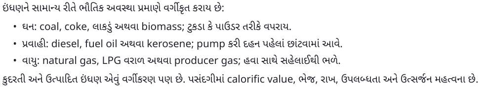
Q.5 (b) · In manufacturing of SO3, feed to a reactor consists of 50 kmol SO2 and 150 kmol air. Calculate % excess air is used. · 4 marks

Air supplies oxygen; nitrogen is inert in this balance.
Given, basis and assumptions
Basis: 50 kmol SO₂ and 150 kmol air fed. Assume dry air is 21 mol% O₂ and 79 mol% N₂.
Percent excess is based on the air needed to react all of the SO₂ according to the balanced reaction.
Step-by-step solution
1. Reaction — 2SO₂ + O₂ → 2SO₃.
Excess air = 26.0% (assuming 21 mol% O₂ in air).
define feed excess.
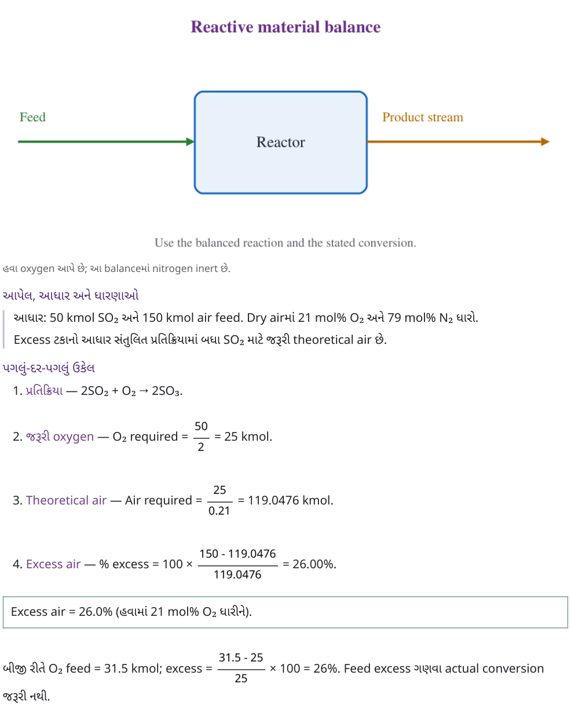
Q.5 (c) · Crude oil analysed to contain 87% carbon, 12.5% hydrogen, 0.5% sulphur by weight. Calculate the net calorific value of crude oil at 298 K. Data: GCV of crude oil at 298 K is 45071 kJ/kg oil. Latent heat of water vapour at 298 K = 2442.5 kJ/kg. · 7 marks
Given, basis and assumptions
Basis: 1 kg crude oil, with 12.5 wt% hydrogen; GCV = 45,071 kJ/kg and latent heat at 298 K = 2,442.5 kJ/kg water.
Assume all fuel hydrogen forms water, and no fuel or air moisture is specified; neglect other corrections.
Step-by-step solution
1. Hydrogen in fuel — mH = 0.125 kg H per kg fuel.
1.125 kg/kg fuel.
3. Latent heat difference — 1.125 × 2,442.5 = 2,747.8125 kJ/kg fuel.
4. Net value — NCV = 45,071 − 2,747.8125 = 42,323.1875 kJ/kg fuel.
NCV ≈ 42,323.19 kJ/kg crude oil (under the stated assumptions).
Subtract the latent heat once from the supplied GCV; the carbon and sulfur do not require a second heating-value calculation here. Fuel moisture, if present, needs an additional correction.
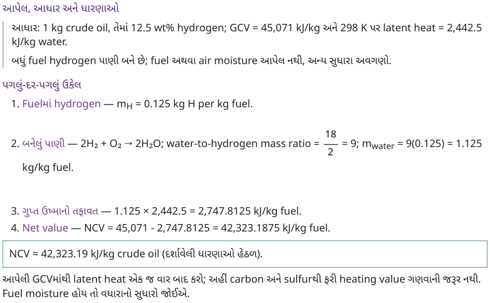
Q.5 (a) · Explain Calorific values of fuels. · OR · 3 marks
Calorific value is the heat released by complete combustion per unit mass of fuel (or per unit volume for a gas at stated reference conditions).
Gross calorific value (GCV or HHV) includes the heat recovered if product water is condensed to liquid at the specified reference state. Net calorific value (NCV or LHV) leaves product water as vapour, so its condensation heat is not recovered.
NCV = GCV − (mass of water left as vapour per unit fuel) × (latent heat at the reference state)
GCV ≥ NCV for the same fuel and reference conditions. Water can arise from fuel hydrogen, fuel moisture and incoming air moisture; include only the quantities specified or assumed.

Q.5 (b) · Define Combustion. Explain proximate analysis of fuels. · OR · 4 marks
Combustion is a rapid oxidation reaction, usually with oxygen, that releases heat and often light.
Proximate analysis describes a solid fuel by moisture, volatile matter, ash and fixed carbon, typically as mass percentages on a stated basis.
1. Measure moisture by drying under the specified standard method.
2. Determine volatile matter by prescribed heating without air; determine ash from the remaining inorganic residue after complete combustion.
3. Fixed carbon is normally calculated by difference: 100 − moisture% − volatile matter% − ash%.
Ultimate analysis determines elemental composition, normally C, H, N, S and O, with ash/moisture stated separately as appropriate; oxygen is often found by difference.
Proximate analysis helps assess handling and burning behaviour; ultimate analysis supports combustion-air, flue-gas and heating-value calculations. Report the basis (as received, dry, or dry ash-free).
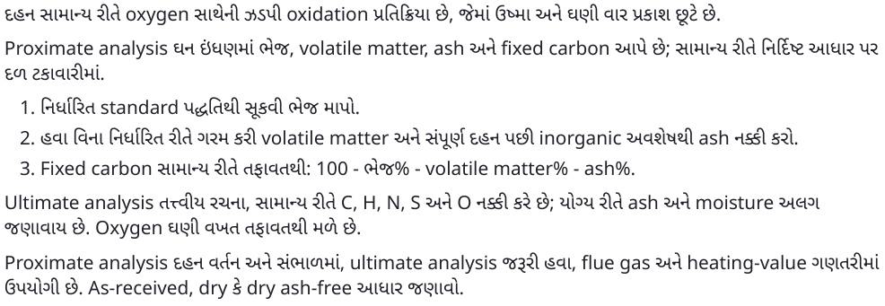
Q.5 (c) · The orsat analysis of the flue gases from a boiler chimney by volume is given below: CO2 = 11.4%, O2 = 4.2% and N2 = 84.4% Assume complete combustion takes place, calculate the % excess air. · OR · 7 marks
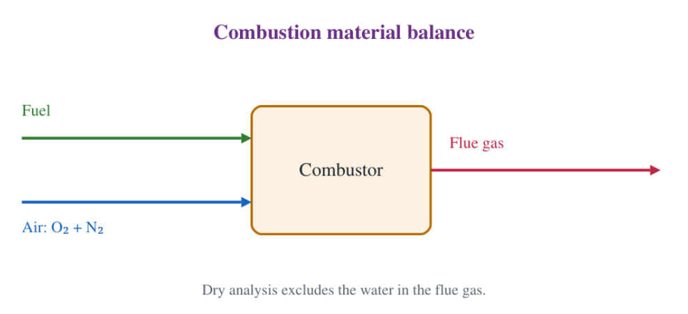
Orsat analysis is on a dry flue-gas basis.
Given, basis and assumptions
Basis: 100 mol dry flue gas: CO₂ = 11.4 mol, O₂ = 4.2 mol, N₂ = 84.4 mol.
Assume complete combustion; dry air is 21 mol% O₂ and 79 mol% N₂; all measured N₂ comes from air, and no unmeasured N₂ or O₂ enters or leaves.
Step-by-step solution
2. Theoretical oxygen — Complete combustion uses O₂ = 22.43544 − 4.2 = 18.23544 mol.
Excess air ≈ 23.03% on the theoretical-air basis.
The unused O₂ is the excess above complete-combustion demand; for fixed air composition, the excess-air and excess-O₂ ratios are the same. CO₂ is part of the dry total; fuel N₂, oxygen leakage or incomplete combustion would invalidate these assumptions.
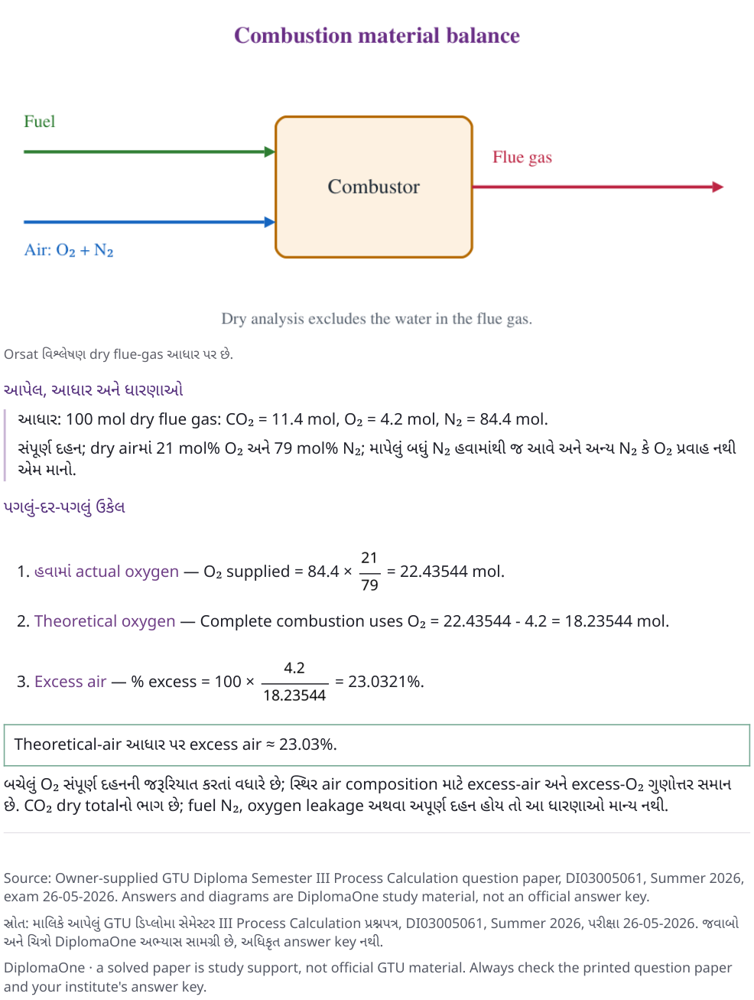